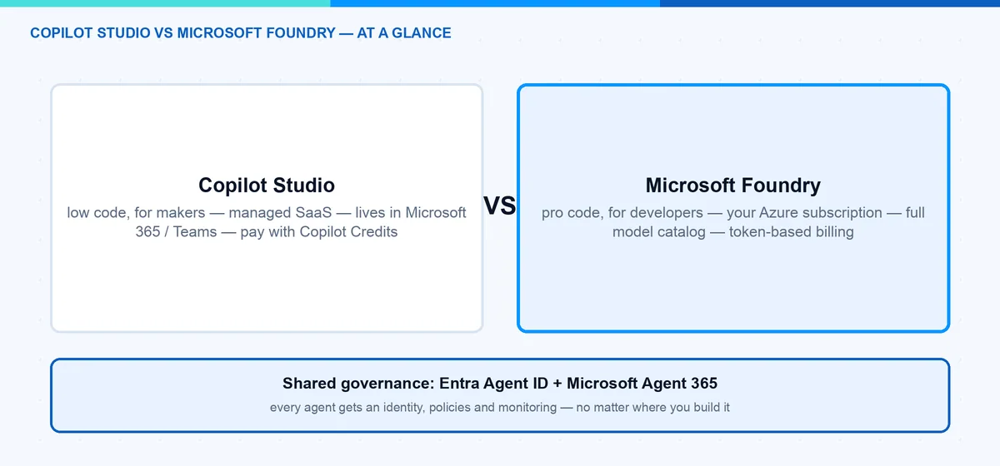
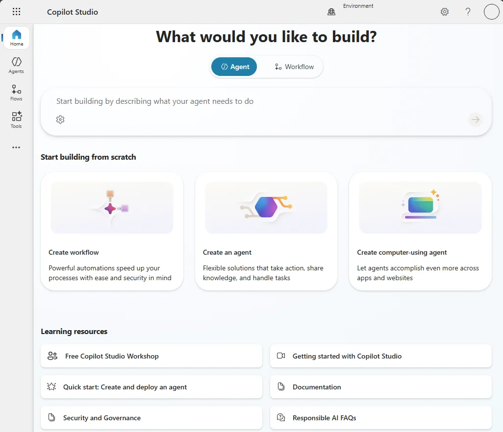
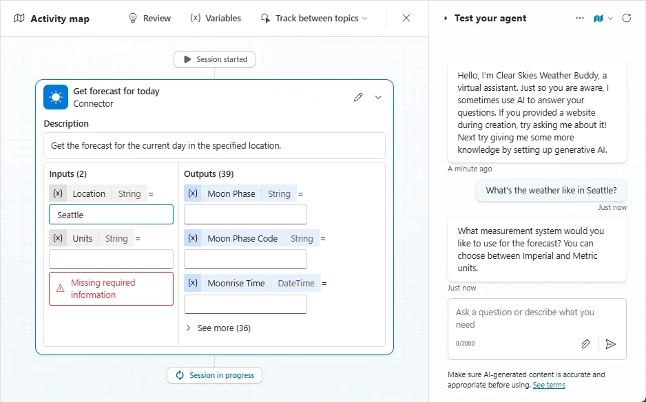
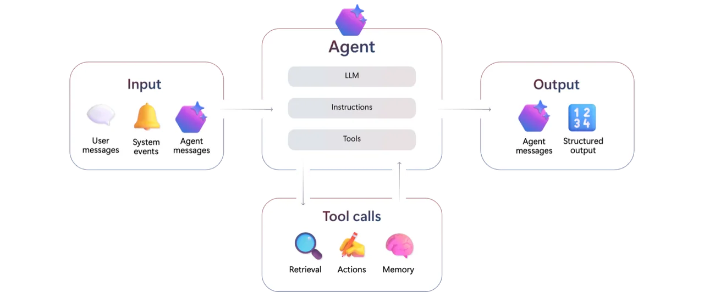
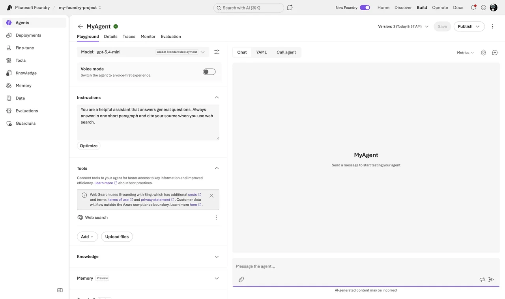
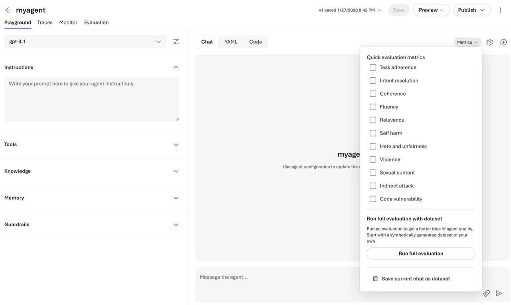
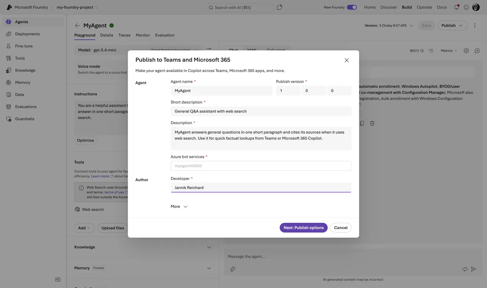
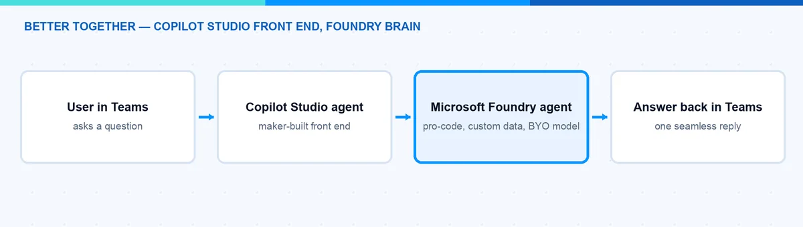

Microsoft Foundry vs Copilot Studio: Which Agent Platform?
Many companies want to build AI agents right now, and the first question I get is always the same: Microsoft Foundry vs Copilot Studio â which one should we use? In this blog post I explain how both platforms work under the hood, compare models, hosting, pricing, and governance, and I am honest about quality â because that is where many Copilot Studio projects struggle. I also explain why, in the age of AI-assisted coding, the âfull codeâ platform Foundry is often the faster way to a working agent. At the end you should know which platform fits your scenario â or if you should use both together.
Note: Azure AI Foundry was renamed to Microsoft Foundry at Ignite 2025, and the new Foundry Agent Service reached general availability on March 16, 2026. In this post I always mean the new Microsoft Foundry.
Quick answer: Choose Microsoft Foundry when you need full-code control, model choice, custom tools, evaluation and production operations. Choose Copilot Studio when low-code authoring and deep Microsoft 365 integration matter more. Many enterprise architectures use both rather than treating them as mutually exclusive.
Last verified: July 22, 2026
Microsoft Foundry vs Copilot Studio: What Is the Difference?
The short version: it is mostly about who builds the agent and where it runs.
Microsoft Copilot Studio is a low-code SaaS platform. Makers and IT admins build agents in a graphical designer, publish them to Microsoft Teams, Microsoft 365 Copilot, or a website, and Microsoft runs everything for you. No Azure subscription needed.
Microsoft Foundry is the pro-code platform. Developers build agents with SDKs (Python, C#, TypeScript) against the Foundry Agent Service. It runs in your Azure subscription, you pick the model, and you control the orchestration.
Here is my comparison at a glance:
| Copilot Studio | Microsoft Foundry | |
|---|---|---|
| Audience | Makers, IT admins, fusion teams (low-code) | Developers, data scientists (pro-code) |
| Models | Managed models, curated by Microsoft (BYO Foundry model possible) | Full catalog: OpenAI, Anthropic, Meta, Mistral, open source, fine-tuning |
| Hosting | Managed SaaS, no Azure subscription needed | Your Azure subscription, your region, your network rules |
| Pricing | Copilot Credits: prepaid packs or pay-as-you-go | Consumption: model tokens plus tool and compute charges |
| Governance | Entra Agent ID, Agent 365 registry, Power Platform admin controls | Entra Agent ID, Agent 365 registry, Azure RBAC and policies |
| Quality tooling | Manual test panel, activity map | Evaluations, tracing, versioning, agent optimizer |
| Agent-to-agent | A2A built in (GA since April 2026) | A2A tool and own A2A endpoints (preview) |
| Best for | Teams/M365 agents, helpdesk, HR, fast time to value | Custom apps, own data and models, quality-critical agents |

How Does Copilot Studio Work?
An agent in Copilot Studio is a combination of building blocks: instructions, knowledge sources (SharePoint, websites, Dataverse, documents), topics (pre-authored conversation flows), tools (connectors, MCP servers, and agent flows), and triggers. You configure all of this in the browser â no code, no deployment pipeline.

Image: Microsoft Learn.
The most important concept is orchestration â how the agent decides what to do with a user message. Classic orchestration matches trigger phrases and runs one authored topic: predictable, but rigid. Generative orchestration (the default for new agents) lets a language model read the descriptions of your topics, tools, and knowledge sources, pick one or more of them, fill inputs from context, and generate the final answer.
This is the key thing to understand: with generative orchestration, your descriptions are your programming model. If two tools have similar descriptions, the agent may pick the wrong one â Microsoftâs own orchestration guidance is essentially a style guide for writing better descriptions.
A test panel with an activity map shows which topic or tool the agent selected:

Image: Microsoft Learn.
Hint: The activity map is genuinely useful, but it is a manual tool. There is no built-in way to run 200 test questions and get a quality score â the closest is the Power CAT Copilot Studio Kit, a community tool. Remember that for the quality section.
How Does Microsoft Foundry Work?
Microsoft Foundry approaches the same problem from the developer side. The heart is the Foundry Agent Service, and every agent is a model from the Foundry catalog plus instructions plus tools.

Image: Microsoft Learn.
Since the March 2026 GA, the service runs on the Responses API â the same wire format as the OpenAI Responses API. Agents are named and versioned, state lives in server-side conversations, and each turn is a response. Older tutorials that talk about threads and runs describe the classic service, which retires on March 31, 2027. Do not start there.
Foundry gives you two agent types:
- Prompt agents: you define the agent as configuration â instructions, model, tools â in the portal or via SDK/REST. Foundry runs it for you. No containers, no compute to manage.
- Hosted agents (GA since July 2026): you write real agent code â Microsoft Agent Framework, LangGraph, or custom â package it as a container, and Foundry runs it with per-session sandboxes, auto-scaling, a dedicated Entra identity, and observability.
Building a prompt agent in the portal takes five minutes: sign in to ai.azure.com (make sure the New Foundry toggle in the top banner is on), open your project, and go to Build â Agents â Create agent. Name it, write the instructions, pick your deployed model, and add tools from the Add Tools catalog (also reachable via Build â Tools).


The same agent from code â note the two-client pattern: the project client manages agent versions, the OpenAI client does the chatting:
# Create a prompt agent and chat with it (azure-ai-projects >= 2.0)
from azure.identity import DefaultAzureCredential
from azure.ai.projects import AIProjectClient
from azure.ai.projects.models import PromptAgentDefinition
project = AIProjectClient(
endpoint="https://<resource>.services.ai.azure.com/api/projects/<project>",
credential=DefaultAzureCredential(),
)
agent = project.agents.create_version(
agent_name="helpdesk-agent",
definition=PromptAgentDefinition(
model="gpt-5-mini",
instructions="You answer IT questions for employees. Keep answers short.",
),
)
openai = project.get_openai_client(agent_name="helpdesk-agent")
conversation = openai.conversations.create()
reply = openai.responses.create(
conversation=conversation.id,
input="How do I reset my VPN profile?",
)
print(reply.output_text)The part I like most is the development lifecycle: playground, tracing of every model call and tool invocation, evaluations against datasets, and versioning with rollback. Quality metrics like task adherence or groundedness can be switched on directly in the playground:

Image: Microsoft Learn â evaluations are a first-class feature, not an afterthought.
Hands-on walkthroughs: build your first agent in Microsoft Foundry and evaluate AI agents in Microsoft Foundry.
What About Models and Hosting?
In Copilot Studio, Microsoft manages the models for you. You get a curated set that Microsoft operates and updates. Great for a helpdesk agent â you never patch a model deployment. The trade-off: less choice and less tuning.
In Microsoft Foundry you get the full model catalog â OpenAI, Anthropic, Meta, Mistral, xAI, open source â plus fine-tuning on your own data. You decide the region, you control the network rules (private networking is GA, including tool traffic), and you can swap the model under an agent without changing the agent code â useful when a better or cheaper model ships, which happens every few months now.
What Do They Cost?
Pricing is the second big difference. Copilot Studio bills in Copilot Credits: prepaid packs (25,000 credits for $200 per month at the time of writing) or pay-as-you-go at $0.01 per credit. Different actions consume different amounts of credits. Pack costs are capped and predictable; high volume gets expensive.
Hint: Since September 1, 2025 the billing unit is called Copilot Credits instead of messages. Pack size and price did not change, but the metering did â it is feature-based now, so âone message = one creditâ is no longer a safe assumption.
Microsoft Foundry bills by consumption in your Azure subscription. Prompt agents themselves cost nothing extra â you pay model tokens plus separate tool meters: Web Search $14 per 1,000 calls, Code Interpreter $0.033 per session, File Search $0.11 per GB per day, and the memory preview is billed since June 2026. Hosted agents add container compute at $0.0994 per vCPU-hour plus $0.0118 per GiB-hour during active sessions (US East prices). At low volume this is very cheap, but token spend is harder to predict, so you need cost monitoring.
How Does Governance Work for Both?
Good news: governance has converged. Both platforms plug into Microsoft Entra Agent ID. Copilot Studio creates an Entra agent identity for every agent, and Foundry provisions one when you publish an agent. Every agent gets an identity you can see in the Entra admin center and target with Conditional Access.
On top sits Microsoft Agent 365, GA since May 1, 2026 ($15 per user per month, or included in Microsoft 365 E7). Its registry in the Microsoft 365 admin center (Agents â All Agents â Registry) gives you one inventory across both platforms â even across AWS Bedrock and Google Vertex AI â with risk signals from Entra, Defender, and Purview. More in my post on Microsoft Agent 365 vs Microsoft 365 Agents.
For you as an IT pro this means: governance should not drive the platform choice anymore â pick by builder skills and workload, and govern both in one place.
What About Quality? My Honest Experience
Now the part that most comparisons skip: quality. My honest experience is that Copilot Studio agents often do not meet the quality standards the business expects. The demo looks great â you connect a SharePoint site, ask three questions, everyone is impressed. Then real users arrive with real questions, and the agent picks the wrong tool, misses the right document, or gives a confident answer that is only half correct. I have seen more than one pilot quietly die this way.
This is not because the makers did a bad job. It is built into how the platform works:
- Routing depends on prose. Two similar descriptions and the agent calls the wrong tool â your only fix is rewording text and testing again by hand.
- You cannot see or tune the retrieval. Chunking, indexing, and search are managed for you. When answers are wrong, there is no pipeline to debug.
- Testing is manual. Fine for spot checks, but you find regressions when users find them.
- Known limitations bite in production. Limited disambiguation, limited conversation history, constraints on tool inputs â together they cap what the platform can reliably do.
Foundry is built for exactly this problem. Evaluations measure task adherence, groundedness, intent resolution, and more â automatically, even as a CI/CD gate with the official GitHub Action. Tracing shows every model call and tool decision. And you control the retrieval stack, the orchestration, and the model itself.

My rule of thumb: when quality and flexibility are the requirement, Foundry is the better platform. Copilot Studio can be good enough for FAQ-style agents with narrow scope and curated knowledge. But if the agent touches a critical process or needs to be measurably good, I would not build it in a tool that cannot measure it.
Can You Code? Then Foundry Is Often Faster
There is a second point most comparisons get wrong. The classic assumption is: low-code is fast, pro-code is slow. In 2026, with AI-assisted development, that has flipped for many teams. If you can code â or you let GitHub Copilot or Claude write most of the code while you review and steer â a Foundry agent is often faster to build:
- The scaffold is minutes, not days. An AI assistant generates a working Foundry agent from one prompt. Clicking the same logic together in a designer takes longer.
- Code is text, and text is what AI is great at. There is no AI that clicks through the Copilot Studio designer for you.
- Code is versionable and reviewable. Git diff, pull request, automated evaluations on every change.
- You never hit the ceiling. In code, the special case is just another function.
Note: This does not make Copilot Studio pointless. If the people who own the agent are makers who do not code â not even with AI assistance â the low-code designer is exactly right, because they can maintain the agent after go-live. Just do not choose Copilot Studio because you think code is slower. With todayâs tooling, it usually is not.
When Should I Use Copilot Studio?
I would go with Copilot Studio when:
- The agent lives in Microsoft Teams or Microsoft 365 Copilot.
- Makers or IT admins build and maintain it â not a dev team.
- You want the 1,500+ Power Platform connectors and agent flows out of the box.
- Time to value matters more than deep customization.
- Predictable pricing without an Azure subscription is a plus.
- The scope is narrow and âgood enoughâ answers really are good enough.
Typical wins: IT helpdesk, HR onboarding, internal knowledge assistants.
When Should I Use Microsoft Foundry?
I would go with Microsoft Foundry when:
- Developers build the agent and it lives in your own app or website.
- You need a specific model, fine-tuning, or a non-OpenAI model.
- You need full control: region, networking, RBAC, CI/CD.
- Quality is a requirement, not a hope â evaluations, tracing, versioning built in.
- You build multi-agent workflows with complex orchestration.
- Token-based Azure billing fits your FinOps model better than credits.
Honest limit: Foundry needs developers, also after go-live. If nobody can debug Python when the agent misbehaves in production, do not start here.
Can I Combine Them?
Yes â and this is my favorite part: it is not either-or.
Three integrations matter in practice. First, Copilot Studio can bring your own Foundry model. Second, a Copilot Studio agent can connect to a Microsoft Foundry agent and hand tasks over to it â the connection runs over the open A2A protocol, GA in Copilot Studio since April 2026 (the dedicated Foundry connector is still labeled preview). Third, Foundry agents publish directly to Teams and Microsoft 365 Copilot â GA since June 10, 2026: open your agent, click Publish â Teams and Microsoft 365 Copilot, fill in the metadata, then choose âJust youâ for a personal test or âPeople in your organizationâ, which an admin approves in the Microsoft 365 admin center.

A common pattern is: Copilot Studio as the front end in Teams, built by makers â and Foundry agents doing the heavy, custom work behind it. This also solves the quality problem: the fragile part (routing, retrieval, complex logic) moves into Foundry where you can evaluate and trace it, and Copilot Studio stays the friendly front door. You can see this fusion-team direction in my summary of the Microsoft Build 2026 agentic stack.

What Would I Choose?
My simple rule: start where your builders are â but be honest about your quality bar.
If makers own the agent, it lives in Microsoft 365, and the scope is a well-defined internal assistant, I choose Copilot Studio. If a dev team owns it, if it needs a specific model, or if quality and flexibility are hard requirements, I choose Microsoft Foundry â and if the team can code, even a little with AI assistance, Foundry is usually also the faster path. For bigger organizations I would plan for both from day one: Copilot Studio as the front door, Foundry for the custom brains, and Agent 365 with Entra Agent ID as the common governance layer.
The question is less about âwhich is betterâ and more about âwho builds it, where does it run, and how good does it have to beâ. Once you answer that, the platform picks itself. I hope this is a little help.
Stay healthy, Cheers Jannik